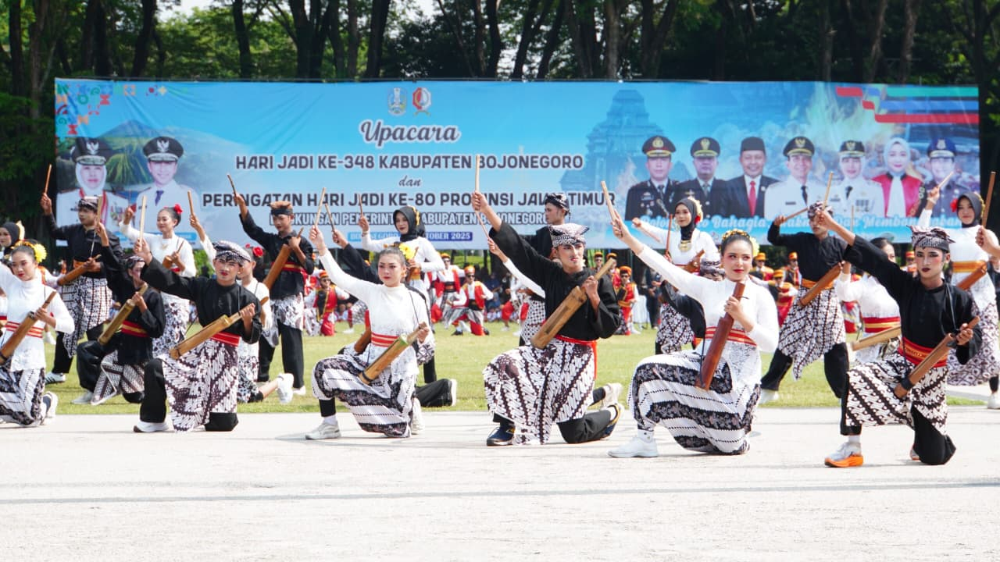
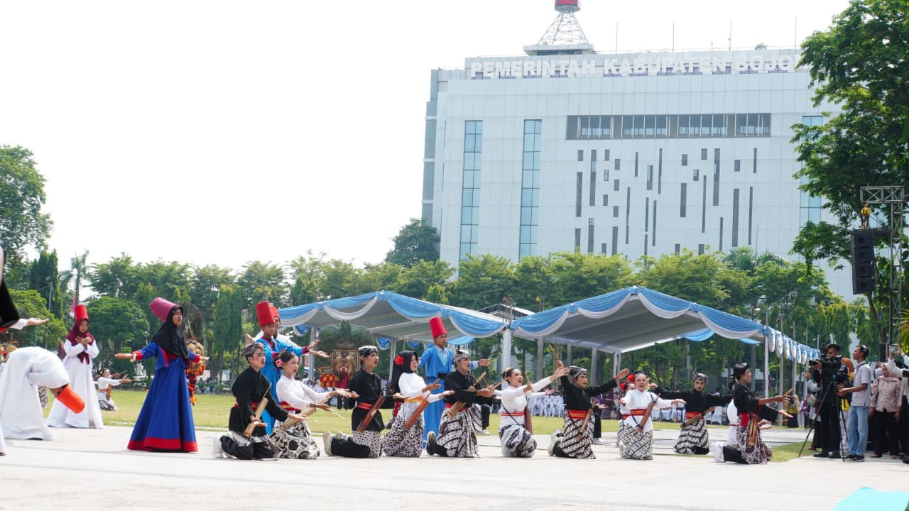

Tari kolosal 'Bojonegoro Gemilang' dan penampilan Senam Kolosal Semaphore sukses memeriahkan puncak acara Hari Jadi Bojonegoro (HJB) ke-348, Senin (20/10/2025). Perayaan puncak HJB ke-348 ini dimulai dengan upacara di alun-alun yang dilanjutkan berbagai pertunjukan yang memukau dan penuh makna.
Tari Kolosal Bojonegoro Gemilang menggambarkan kisah tentang harmoni masyarakat yang hidup dalam keberagaman tradisi, spiritualitas, dan kedisiplinan. Sementara 'Senam Kolosal Semaphore' wujud semangat generasi muda Pramuka Indonesia yang melibatkan 1.961 peserta Pramuka dari SD dan MI.
Dalam semarak Hari Jadi Bojonegoro ke-348, alun-alun menjadi saksi perjalanan panjang sebuah daerah yang kaya budaya dan penuh semangat kebersamaan. Pertunjukan Tari Kolosal Bojonegoro Gemilang melibatkan 348 orang yang terdiri dari perwakilan siswa-siswi SMP/MTs Kabupaten Bojonegoro, perwakilan SMA/SMK/MA Kabupaten Bojonegoro, Paguyuban Jaranan dan Reog Bojonegoro. Serta TNI Cilik Binaan Kodim 0813 Bojonegoro, Komunitas Tari Sufi Bojonegoro, dan Grup Hadrah Al-Falab.
Pertunjukan diawali dengan 'Tari Tangsil', yang melambangkan gotong-royong masyarakat Bojonegoro. Kemudian penampilan 'Rampak Oklik' mengiringi suasana penuh energi. Irama musik dari bambu khas Bojonegoro menggambarkan denyut nadi kehidupan masyarakat yang bekerja, berkreasi, dan bersatu dalam setiap langkah kemajuan.
Dilanjutkan penampilan 'Dadak Merak', menggambarkan suasana megah dan penuh warna, mencerminkan keindahan seni serta kebanggaan atas kekayaan budaya Nusantara yang tumbuh di bumi Bojonegoro.
Formasi PBB TNI CILIK tampil tegas menunjukkan semangat disiplin, persatuan, dan cinta tanah air sebagai wujud Bojonegoro yang modern, tangguh, dan gemilang.
Sementara itu 'Tari Sufi', menandai perjalanan batin manusia Bojonegoro yang tak hanya kuat secara jasmani, tetapi juga mendalam secara spiritual. Gerak berputar melambangkan doa dan ketulusan hati dalam mengabdi kepada Sang Pencipta. Seluruh rangkaian tarian berpadu menjadi satu harmoni sebuah simbol perjalanan Bojonegoro dari akar tradisi menuju kejayaan masa depan.
"Bojonegoro Gemilang" bukan sekadar pertunjukan, melainkan perayaan jiwa masyarakat atas tanah yang dicintai menuju Bojonegoro yang Bahagia, Makmur, dan Membanggakan.
Setelah penampilan kolosal dilanjutkan 'Senam Kolosal Semaphore'. Momen luar biasa ini melibatkan 1.961 peserta Pramuka dari 22 lembaga SD dan MI se-Kecamatan Bojonegoro menampilkan Senam Kolosal Semaphore dengan penuh semangat dan kekompakan.
Jumlah peserta ini bukan sekadar angka, melainkan simbol tahun lahir Gerakan Pramuka Indonesia, 1961 tonggak lahirnya semangat kepanduan yang tak pernah padam. Dengan iringan musik khas Bojonegoro, para peserta menampilkan gerak yang serempak, disiplin, dan jiwa kebersamaan yang membanggakan. Inilah wujud semangat generasi muda Pramuka Indonesia! tangguh, ceria, dan siap mengabdi untuk Indonesia.